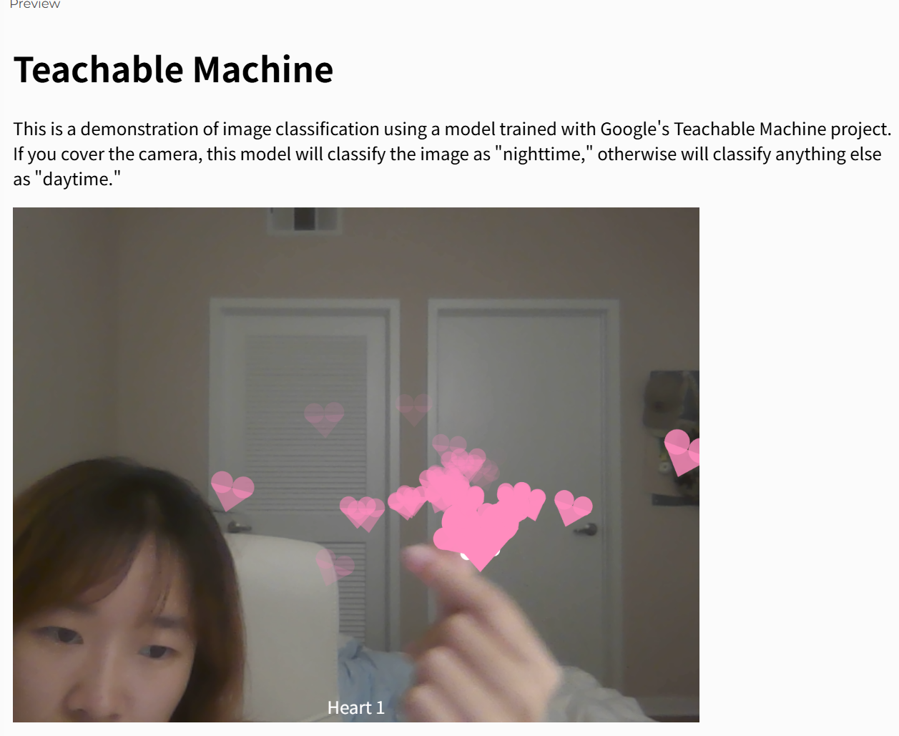
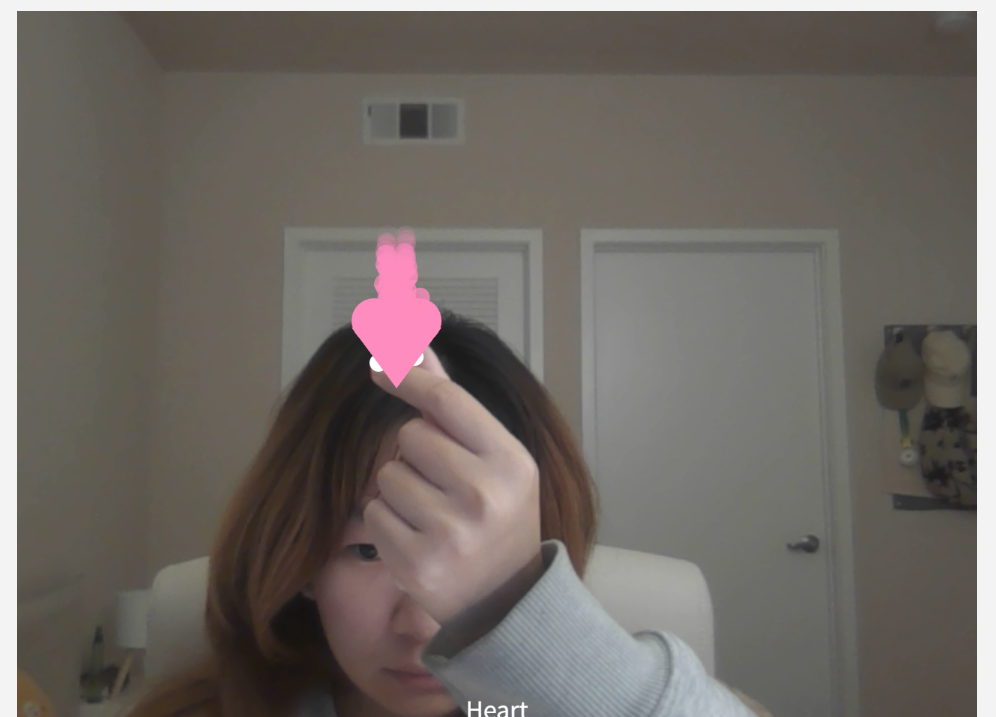
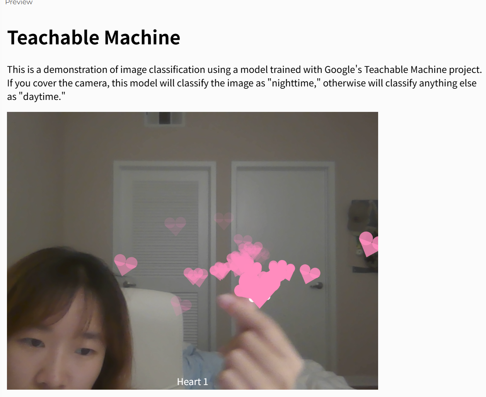
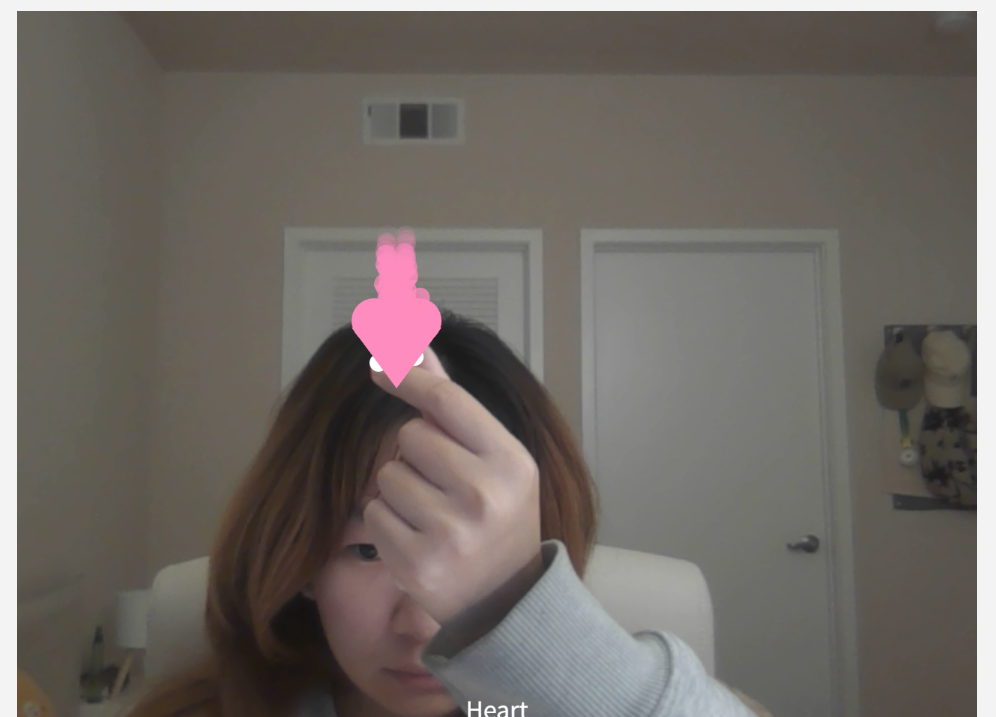

Process & Notes
In this project I explored using hand pose tracking to detect the distance between thumb and index finger. When the distance is small enough, the gesture is treated as a “heart” and floating hearts are generated on top of my fingers.
Image recognition - When the background changes, there will be a problem of not being able to recognize the heart gesture → Switch to using the gesture recognition function to recognize the distance between the thumb and index finger. When a certain distance is reached, a heart effect will be generated.
Sketches


 



When my thumb and index finger come close enough to form a "heart" gesture, the system uses hand keypoints to find the midpoint between them and generates heart particles that follow the motion of my fingers. 😊